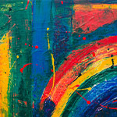
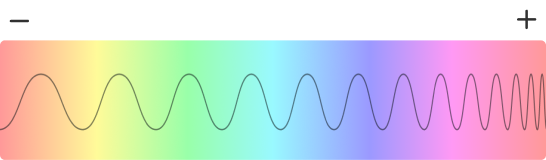
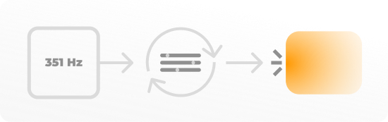

C o l o r ' s o u n d s
Color'sounds
Image'sounds
- 
SoundBoard
Sélectionnez la touche que vous voulez modifier.
Piano
Fonctionnement de Color'sounds
Comment ça marche ?
De votre point de vue, vous jouez avec trois sliders qui modifient la couleur et la fréquence sonore qui en sort.
Vous avez sans doute remarqué que plus la couleur est présente, plus le son joué est fort. À l’inverse, plus elle est blanche, noire ou désaturée (c.-à-d. moins la couleur est présente), moins le son est audible.
Ces observations permettent déjà de comprendre que la luminosité et la saturation sont directement liées à l’intensité du son. Cela s’explique par le fait que le blanc et le noir ne sont pas reconnus comme étant des couleurs. Plus encore, dans le domaine musical, le blanc et le noir sont liés à un vide, ce qui est en accord avec mon raisonement mon raisonnement.
Démonstration de la fonction qui calcule le gain
Avec ces paramètres, nous arrivons à la première version de mon projet. Elle est intéressante, mais semble incomplète, n’est-ce pas ?
C’est parce qu’elle joue les fréquences des couleurs telles qu’elles sont présentées dans le spectre visible (de 428 Thz à 750 Thz). Cela explique pourquoi un seul rouge joue deux sons différents aux deux extrémités du slider de teintes. Cela peut sembler étonnant car nous voyons la même couleur: pourquoi devrait-il s'agir de fréquences différentes ?
Pour résoudre ce problème, le code ne crée désormais plus la fréquence depuis la teinte du schéma TSL (Teinte, Saturation, Luminosité), mais bien depuis l’addition des couleurs rouge, vert et bleu du schéma RVB.
Pour obtenir ce schéma, je convertis la couleur fournie par le schéma TSL en couleur RVB à l’aide de la fonction “TSLToRGB(t, s, l)” et j’obtiens donc les valeurs “rouge”, “vert” et “bleu” avec lesquelles je peux jongler.
Démonstration de la fonction qui calcule la fréquence
Grâce à ce code, je peux associer une gamme de fréquences à chaque valeur du schéma RVB pour créer non seulement un mélange de couleurs, mais également un mélange de ces gammes. Il en résulte un son plus représentatif de chaque couleur (un bleu grave, un jaune aigu, …).
Comment jouer les paramètres obtenu par ces méthodes ?
Pour jouer une fréquence avec la Web audio API, il faut créer un oscillateur et le démarrer. Une fois démarré, l’oscillateur prend trois paramètres principaux en compte : le type d’oscillateur, la fréquence, et le gain. Une fois que j’ai récupéré mon gain et ma fréquence avec les fonctions citées ci-dessus, voir :
Ensuite je dois les assigner à mon oscillateur. Pour ce faire, la Web audio API met à disposition “setValueAtTime” et “setTargetAtTime”. Le code “setTargetAtTime” est très utile pour le gain car il permet de gérer le son de manière plus fluide et d’ainsi éviter les grésillements. Avec ces deux outils, je formule la demande suivante :
Le piano
Si vous êtes sur la version ordinateur du site et que vous avez parcouru tous les onglets, vous aurez compris qu’il s’agit généralement du même principe pour chaque page : (1) récupérer une couleur, (2) créer sa fréquence et son gain, (3) jouer les paramètres.
Cependant le piano, lui, sort du lot. C’est le seul code auquel on donne d’abord une fréquence, et non une couleur. Toutefois, deux problèmes se posent : d’une part, plusieurs fréquences correspondent à plusieurs couleurs, d’autre part, il est impossible de calculer une couleur sur la base d’une fréquence.
La solution, c’est donc de demander au code de trouver une couleur correspondant à la fréquence déclenchée par le piano, et ensuite de l’afficher à l’écran.
Démonstration du fonctionnement du piano
Pour la suite
Les prototypes pourraient être plus développés. Certaines personnes trouvent que ce système pourrait être utilisé par les personnes non voyantes, il serait même possible de créer un petit dispositif qui permettrait d'écouter une couleur par un simple contact avec une surface !
Il s’agit ici d’un bref aperçu du fonctionnement de mon code et des mes recherches. Pour en découvrir la totalité, vous pouvez consulter cet article Medium.
Crédits
© 2021 - Julien Scheen
Code
-
Récupérer les dominantes de couleurs d'une image.
Copyright (c) 2021 by - Lokesh Dhakar - Voir la licence
-
Détecter la collision d'éléments.
Pen de Dropinks - Copyright (c) 2021 by Dropinks (https://codepen.io/dropinks/pen/MrzPXB) Permission is hereby granted, free of charge, to any person obtaining a copy of this software and associated documentation files (the "Software"), to deal in the Software without restriction, including without limitation the rights to use, copy, modify, merge, publish, distribute, sublicense, and/or sell copies of the Software, and to permit persons to whom the Software is furnished to do so, subject to the following conditions: The above copyright notice and this permission notice shall be included in all copies or substantial portions of the Software. THE SOFTWARE IS PROVIDED "AS IS", WITHOUT WARRANTY OF ANY KIND, EXPRESS OR IMPLIED, INCLUDING BUT NOT LIMITED TO THE WARRANTIES OF MERCHANTABILITY, FITNESS FOR A PARTICULAR PURPOSE AND NONINFRINGEMENT. IN NO EVENT SHALL THE AUTHORS OR COPYRIGHT HOLDERS BE LIABLE FOR ANY CLAIM, DAMAGES OR OTHER LIABILITY, WHETHER IN AN ACTION OF CONTRACT, TORT OR OTHERWISE, ARISING FROM, OUT OF OR IN CONNECTION WITH THE SOFTWARE OR THE USE OR OTHER DEALINGS IN THE SOFTWARE.
-
Convertion des schémas de couleurs.
CSS TRICKS - Voir la licence
-
Réécriture complète du css d'un input range.
CSS TRICKS - Voir la licence
-
Générer un nombre aléatoire entre deux valeurs.
Gist de brunomonteiro3 - Modifications effectuées
-
"SmoothScroll" sur les ancres uniquement.
Réponse de Joseph Silber sur stackoverflow - Modifications effectuées - Voir la licence
-
Empêche la répétition de l'évenement "keyDown" lors d'un appui prolongé.
Réponse de yckart sur stackoverflow - Modifications effectuées - Voir la licence
-
Écouter la fin d'une animation spécifique
Réponse de sticklebrick sur stackoverflow - Modifications effectuées - Voir la licence
-
Récupérer les chiffres/nombres d'une chaîne de caractère
Réponse de cssGEEK sur stackoverflow - Modifications effectuées - Voir la licence
Éléments de design
-
Images
Pexel - Voir la licence
-
Icônes
Font Awesome - Voir la licence
Pages wikipedia partagées
- Contenu soumis à la licence CC-BY-SA. Source : Article Rouge vert bleu de Wikipédia en français (auteurs)
- Contenu soumis à la licence CC-BY-SA. Source : Article Teinte saturation lumière de Wikipédia en français (auteurs)
Aide au développement
-
Mes chers professeurs
M. Bourgaux, M. Marchal, M. Tournay, M. Thronte, M. Distefano, M. Hambersin
-
Trystan Lothaire
Développement du concept initial.
-
Daniel Depinholucas
Aide au développement
-
Manon Hermann
Aide au développement - Contenu
-
Hanafi Younes
Présentation MVP de mon site
-
Deltour Tristan
Aide au développement
-
Olivier Denis
Aide au développement
En raison de cette période un peu particulière, j'ai voulu mentionner les personnes qui m'ont soutenu au cours de ce projet. Chaque échange m'a beaucoup aidé et m'a fait avancer, merci à tous !